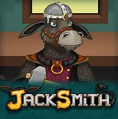
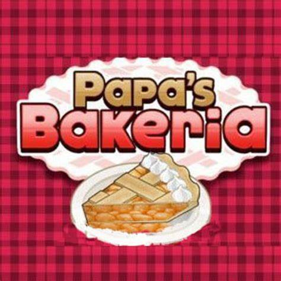
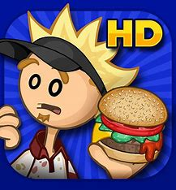
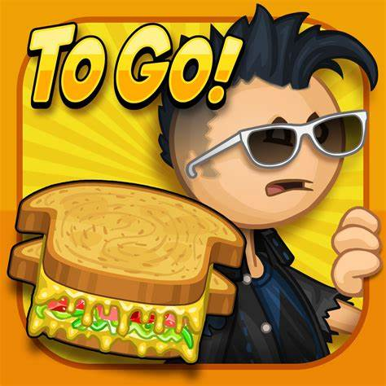
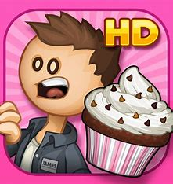
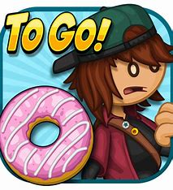
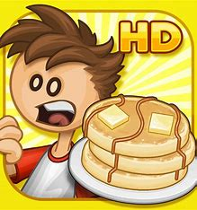
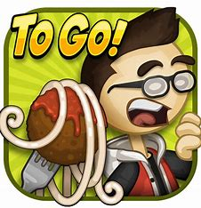
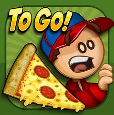
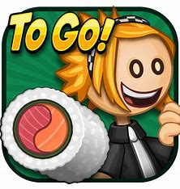

Business Games
Dive into the world of business games where strategy meets simulation, and every decision shapes your success story.

ENTER
Enter the exciting world of business games, where learning feels like an adventure! These games let you step into the shoes of a business leader, making decisions and solving challenges in a fun and risk-free environment. From managing budgets to creating marketing strategies, each move you make teaches you something new. But it's not all serious – teamwork and creativity are key ingredients too! Mistakes become valuable lessons, and together, you and your team can conquer any obstacle. Whether you're a pro or just starting out, business games make learning a thrilling journey where anything is possible!
| ID | Image (press image to play) | Game Name | Description | Orginal Game maker | Website host location |
|---|---|---|---|---|---|
| SBI1 |  | Jack Smith | Jacksmith is the craftiest donkey in all the land. In Jacksmith, you are a blacksmith crafting a wide range of weapons for all of your warriors. Crafting weapons is completely hands-on. Choose your ore, choose your mold, melt it, pour it, construct it, and design it. Whether it's swords, bows, arrows, axes, or others things, you'll need skills and strategy to make the perfect weapon. After crafting, it's off to battle with your team of warriors. As they fight, you gather loot and man the cannons, and keep making progress towards the Great Wizard Dudley! | FLIPLINE Studios | Classroom6x |
| SBI2 |  | Bakeria | You're Hired!!! But can you handle running a big-time bakery serving the most sought-after pies in town? Centered in Whiskview Mall, Papa's Bakeria gets its fair share of foot traffic from some of the pickiest customers around. You'll be tasked with choosing the correct crust, filling them with a variety of wild ingredients, and baking them to perfection! Before you're done, head over to the Top Station to give your pies the finishing touch with a huge assortment of toppings to choose from. | FLIPLINE Studios | Classroom6x |
| SBI3 |  | Burgeria | In this frantic sequel to Papa's Pizzeria, you play as either Marty or Rita, cooking, building, and serving the craziest burgers in town. Work up the ranks and become a paddy flipping master. New to the series is the Upgrade Shop, where you can buy furniture, posters, and tools to build the very best burgers. | FLIPLINE Studios | Classroom6x |
| SBI4 |  | Cheeseria | Papa's Cheeseria is kicking off its opening night celebration with the high-energy band, Scarlett and the Shakers! Unfortunately, all their music gear has been stolen and the show is cancelled. All that expensive equipment is going to take a lot of cash to replace. Good thing you've been hired to build gigantic Grilled Cheese sandwiches at Papa's Cheeseria. | FLIPLINE Studios | Classroom6x |
| SBI5 |  | Cupcakeria | Take your customers quirky orders in the Order Station. Prep the pan with wrappers and gooey batter in the Batter Station. Cook the cupcakes to perfection in the Bake Station. Finally, frost the cupcakes and cover them with delicious decorations in the Build Station. | FLIPLINE Studios | Classroom6x |
| SBI6 |  | Donuteria | You just got a job at Papa's Donuteria in the whimsical town of Powder Point. Sure, the great pay and benefits are nice, but you took the job for that coveted Line-Jump Pass. Unfortunately, now you have to cook dozens of delicious donuts a day for all the crazy customers in this carnival-like town. Cut out the donuts, fry 'em up, and decorate them with a dizzying array of toppings. | FLIPLINE Studios | Classroom6x |
| SBI7 | Freezearea | After starting a relaxing job at the oceanfront ice cream shop on Calypso Island, things get hectic when all of Papa Louie's crazy customers arrive on the island! Now it's up to you to single-handedly craft and serve tasty sundae treats throughout the year. You'll whip up delicious Freezer sundaes by pouring ice cream, adding mixables and syrups, blending sundaes, and finally adding whipped cream and toppings for that perfect summertime treat. You'll need to multitask between each area of the restaurant, where each station is a unique hands-on experience. | FLIPLINE Studios | Classroom6x | |
| SBI8 |  | Pancakeria | This latest game features pancakes, waffles and french toast along with a variety of new and returning customers in search of the best breakfast around. The time-management and hands-on gameplay of the series is back, with new challenges related stacking, arranging toppings and pouring syrup. Closers, badges, and tons of furniture are back and better than ever. New to the series, is a traveling game-show hosted by the Great Foodini! He stops by at the end of every day with a new mini-game to play. However Foodini only accepts special tickets that are earned throughout the day. Each ticket gives you a chance to play his daily game and possibly win over 95 unique prizes. Also new to the series is a very special Drink Station that can be unlocked that will add to the growing challenge of juggling your customers orders. | FLIPLINE Studios | Classroom6x |
| SBI9 |  | Pastaria | "Papas Pastaria" invites players into the bustling world of Portallini, where they take on the role of a pasta chef managing their own restaurant. From classic spaghetti to mouthwatering fettuccine alfredo, players cook and serve delicious pasta dishes, catering to the tastes of their customers while earning tips and unlocking new ingredients. With charming graphics, addictive gameplay, and a delightful soundtrack, "Papas Pastaria" offers an engaging culinary adventure that will keep players entertained for hours. | FLIPLINE Studios | Classroom6x |
| SBI10 |  | Pizzeria | When Papa Louie runs off on another adventure, Delivery Boy Roy is left in charge of Papa's Pizzeria. Unfortunately for Roy, the customers are use to Papa Louie's style of fully custom pizzas. Whether it is 8 pepperonis everywhere and 2 olives on the lower half, or a 10 onion pizza cooked well done and cut in 4 slices, there is no telling what they will come up with. So master the 4 stations and work up the ranks to be the best Pizza Chef around! | FLIPLINE Studios | Classroom6x |
| SBI11 |  | Sushiria | In "Papas Sushiria," players embark on an exciting culinary journey in the bustling town of Sakura Bay. As the newest employee at Papa's Sushiria, you'll craft delicious sushi rolls and fulfill orders for a diverse array of customers. From perfectly seasoned rice to fresh fish and a variety of mouthwatering ingredients, you'll hone your sushi-making skills to perfection. With each satisfied customer, you'll earn tips and unlock new ingredients and decorations to personalize your sushi creations and restaurant. With its charming graphics, addictive gameplay, and immersive sushi-themed experience, "Papas Sushiria" offers hours of fun for players of all ages. | FLIPLINE Studios | Classroom6x |